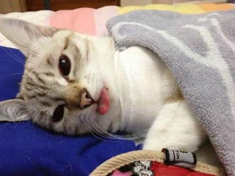
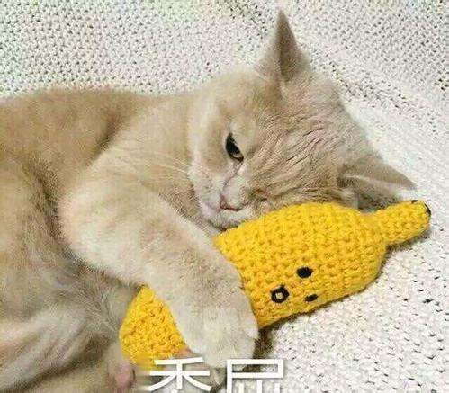
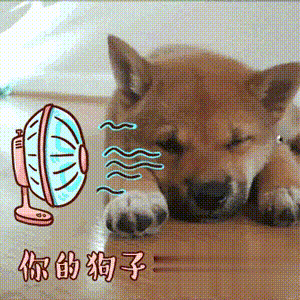
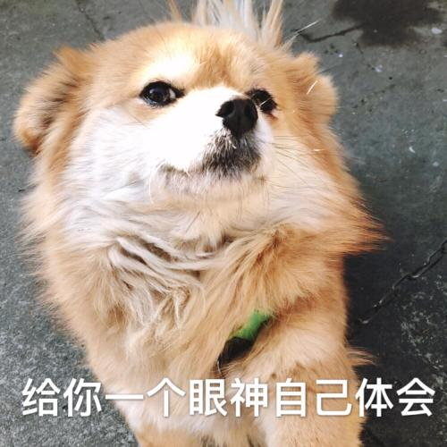
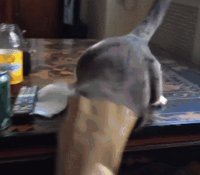

该不该给宠物绝育
首先我们来讲讲如何看待宠物绝育这件事情，应该保持一个什么态度才是对的，其次，宠物绝育没有绝对的对不对，好与坏之分。你首先要有个宠物，将它健健康康养大了，你才能讨论这个问题，否则那你就是云养宠物。
一拨人觉得不绝育对宠物不好，不为宠物着想，不会养宠物；而另一拨人则觉得，绝育了太残忍，没人性，剥夺宠物繁育的权利。其实这两种说法都太绝对，绝育是要看情况来进行的。
宠物绝育好处其实也是很多的。1.因为摘除了生殖器官，所以宠物生殖系统的病变概率降低了，能最长程度减少子宫癌变的风险，睾丸癌也是；2.公犬不会再随地尿尿标记地盘，方便主人也让环境更干净；母猫的话不会乱叫乱发情，造成邻居的不便；3.不绝育的话宠物就会发情，如若没有进行交配，肯定会难受的吧，至少看着很难受；4.宠物的性格会稍微有点改变，这要针对具体而言，但不能因此而寄托希望于用一个手术改变一个性格；5.研究表明绝育后的宠物寿命比未绝育宠物寿命长。绝育的好处是多多，但是如果做好要给宠物绝育的决定，一定要选好医院，建议手术前做好全面的体检，廉价绝育医院不能保证麻醉和手术的条件，所以建议还是去正规医院绝育。
 有的宠物主人不给宠物做绝育其实也是有原因。1.希望自己的宠物也能有自己一个美满的家庭，就像父母希望自己自己的子女儿女成双一样，这也是宠物的一个权利；2.但有一些宠物绝育后会变得没有脾气，郁郁寡欢，贪吃且容易肥胖；3.绝育后的母猫母狗更容易患有泌尿系统疾病，但只是个别情况并不是全部都会；4.宠物主人都希望自己的宠物能够是完整的，每个生命都有完整的美好，当然绝育了也并不是不健全；5.绝育可能增加糖尿病和甲状腺缺乏的几率。一般绝育手术的并发症不会很大，对于狗狗来说是6.1%，对于猫猫来说是2.6%。比如说手术伤口发炎或者肠胃不适。这更证明了绝育的宠物更加需要主人的细心照料，要做好准备。

总的来说，给不给宠物绝育并不能代表你对宠物好不好，这没有绝对的答案。如果你选择给你的宠物绝育，那请你务必要照顾好它；若是决定不给它绝育，那也要照顾好它。既然你选择养它了，那就要好好对待它。虽然它只是你生活里的一小部分，陪你十几年甚至几年而已，可你是它的一生，你是它的全部。
